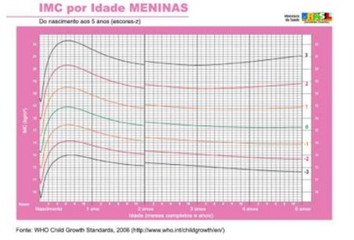
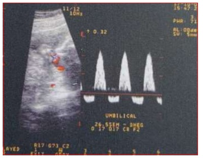
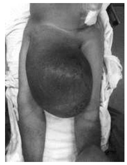

Questão 1 · Financiamento em Saúde · Medicina Preventiva · 4000173610O programa Previne Brasil, instituído pela Portaria nº 2.979, de 12 de novembro de 2019, constitui o novo modelo de financiamento dos serviços da Atenção Primária. Sobre as características do referido programa, analise as sentenças abaixo: I. O custeio é composto por três critérios: capitação ponderada, pagamento por desempenho e incentivo para ações estratégicas II. Ampliação do horário de atendimento (Programa Saúde na Hora) III. Investimento na tecnologia da informação (Informatiza APS) IV. Investimento no Núcleo Ampliado de Saúde da Família e Atenção Básica (NASF-AB) V. Incentivo às equipes de saúde bucal (eSB) Estão CORRETAS
A I, II, III, IV e V.
B apenas II e III.
C apenas II, III e IV.
D apenas II, III, IV e V.
E apenas I, II, III e V.
Questão 2 · Código de Ética Médica CEM · 4000173609O código de ética médica, em seu artigo 31, versa que é vedado ao médico: “Desrespeitar o direito do paciente ou de seu representante legal de decidir livremente sobre a execução de práticas diagnósticas ou terapêuticas, salvo em caso de iminente risco de morte.” O referido artigo abrange o seguinte princípio bioético:
A Beneficência
B Não maleficência
C Autonomia
D Justiça
E Paternalismo
Questão 3 · Testes Diagnósticos · 4000173608Sobre as principais características de performance dos testes diagnósticos, assinale a alternativa CORRETA.
A Valor preditivo negativo pode ser calculado como: (Sensibilidade / (1 – especificidade)).
B Sensibilidade é a probabilidade de resultado positivo nos doentes, e pode ser calculada como: (d / (c + d)).
C Valor preditivo positivo indica a capacidade de um teste detectar corretamente as pessoas com a doença/condição.
D Valores preditivos contêm informações sobre o poder do teste (sensibilidade e especificidade) e da população a ser examinada (prevalência da doença).
E Acurácia é a probabilidade de um determinado resultado em alguém com a doença dividida pela probabilidade do mesmo resultado em alguém sem a doença.
Questão 4 · Especif icidade · 4000173607Analise a tabela de uma pesquisa clínico-epidemiol gica, na qual a fundoscopia, feita por médicos clínicos, foi comparada com um exame padrão-ouro, para avaliar as evidências sobre o desempenho da oftalmoscopia feita por um clínico para o diagnóstico da retinopatia diabética, quando testada contra um exame considerado padrão-ouro. Assinale a alternativa que corresponde à ESPECIFICIDADE da fundoscopia.
A 80%
B 58%
C 50%
D 48%
E 36%
Questão 5 · Lista Nacional de Notif icação Compulsória de doenças agravos e eventos de saúde pública · 4000173606Sobre a Lista Nacional de Noti cação Compulsória de doenças, assinale a alternativa que é de noti cação compulsória imediata.
A Acidente de trabalho com exposição a material biológico
B Hanseníase
C Febre Amarela
D Doença aguda pelo vírus Zika
E Toxoplasmose congênita
Questão 6 · Risco Absoluto · 4000173605Considerando a tabela da questão anterior, um estudo de Coorte, o resultado da divisão do valor descrito na casela “a” pelo valor da casela “a+b” (a/a+b) é denominado de
A Risco Relativo.
B Incidência em expostos.
C Incidência em não expostos.
D Odds Ratio.
E Acurácia.
Questão 7 · Introdução aos Testes Diagnósticos · 4000173604Na tabela abaixo, temos um diagrama de um teste diagnóstico da epidemiologia, utilizado para a aferição de um teste diagnóstico comparado ao Padrão-Ouro. Analisando a tabela, assinale a alternativa INCORRETA.
A d = número de pessoas não expostas e sadias.
B a+b = número de pessoas expostas que ficaram doentes.
C a+c = número de pessoas que ficaram doentes.
D b+d = número de pessoas que permaneceram sadias.
E c+d = número de não expostos.
Questão 8 · COVID 19 · Inf ectologia · 4000173603O plano de vacinação contra a Covid-19 no Brasil foi desenvolvido, inicialmente, pelo Programa Nacional de Imunizações com o apoio técnico-cientí co de especialistas na Câmara Técnica Assessora em Imunização e Doenças Transmissíveis, pautado, também, nas recomendações da OMS. No Brasil, sobre as comorbidades prioritárias para vacinação contra a Covid-19, analise os itens abaixo: I. Diabetes mellitus II. Fibrose cística III. Hipertensão arterial independente da presença de lesão em órgão-alvo IV. Doença renal crônica estágio 2 V. Cardiopatia reumática Assinale a alternativa CORRETA.
A I, II, III, IV e V estão corretos.
B apenas I, II, IV e V estão corretos.
C Existem, apenas, três corretos.
D Existem, apenas, dois corretos.
E Existe, apenas, um correto.
Revisar: possível letra faltando em enunciado
Questão 9 · Medicina Preventiva · Política Nacional de Saúde Integral da População Negra · 4000173602A Política Nacional de Saúde Integral da População Negra (PNSIPN) é um compromisso do Ministério da Saúde n o combate às desigualdades no Sistema Único de Saúde (SUS) e na promoção da saúde da população negra de forma integral. Sobre isso, assinale a alternativa INCORRETA.
A De acordo com o Censo 2010 do Instituto Brasileiro de Geografia e Estatística (IBGE), negras e negros constituem mais da metade da população brasileira (50,7%).
B De acordo com dados notificados no Sistema de Informações sobre Mortalidade (SIM), do total de 1.583 mortes maternas em 2012, 60% eram de mulheres negras e 34% de brancas.
C O SIM do Ministério da Saúde, corroborado pelo Censo Demográfico do IBGE, de 2010, expõe que a taxa de homicídios de negros no Brasil é de 36 mortes por 100 mil negros, enquanto a mesma medida para não negros é de 15,2 por 100 mil.
D A tuberculose representa um sério problema de saúde pública e tem relação direta com a pobreza. Entre 2004 e 2013, a taxa de incidência foi maior na população negra, seguida da taxa da população indígena.
E De acordo com o Instituto de Pesquisa Econômica Aplicada (Ipea), em 2008, a população negra representava 67% do público total atendido pelo SUS, e a branca, 47,2%.
Questão 10 · Medicina Preventiva · Políticas de Saúde para Populações Específ icas · 4000173601A Política Nacional de Atenção à Saúde dos Povos Indígenas conceitua uma proposta que define um modelo de organização de serviços - orientado para um espaço etno-cultural dinâmico, geográ co, populacional e administrativo bem delimitado, que contempla um conjunto de atividades técnicas, visando a medidas racionalizadas e quali cadas de atenção à saúde, promovendo a reordenação da rede de saúde e das práticas sanitárias e desenvolvendo atividades administrativo-gerenciais necessárias à prestação da assistência, com controle social. Assinale a alternativa que corresponde a esse conceito.
A Casas de Apoio à Saúde Indígena
B Unidade Básica de Saúde Indígena
C Polos-Base de Saúde Indígena
D Distrito Sanitário Especial Indígena
E Fundação Nacional do Índio
Revisar: possível letra faltando em enunciado
Questão 11 · Classif icação dos Estudos Epidemiológicos · 4000173600Um pesquisador selecionou 600 mulheres menopausadas em 4 hospitais de Pernambuco e São Paulo, no período de 2000 a 2010, tendo sido comparadas com 1000 mulheres internadas nos mesmos hospitais, no mesmo período, apresentando outros cânceres ou outras condições clínicas. O fator em estudo era o uso prévio de estrogênios. Sobre essa pesquisa, assinale a alternativa que indica o tipo de estudo epidemiológico utilizado.
A Coorte
B Intervenção
C Caso Controle
D Ensaio clínico
E Inquérito
Questão 12 · Ciclo de vida f amiliar · 4000173599A família pode ser considerada como a unidade-base para o treinamento social. Trata-se do ambiente em que se experimenta o primeiro senso de pertencimento, identidade e conexão. Sobre os tipos familiares, assinale a alternativa INCORRETA.
A A família unitária é composta por uma só pessoa, como é o caso de uma viúva sem filhos.
B A família extensiva é constituída por mais de uma geração, podendo ter também vínculos colaterais, como tios, primos e padrinhos.
C A família reconstituída é formada por pessoas que moram juntas e desempenham papéis parentais em relação a uma criança ou a um adolescente.
D A família nuclear é formada pelos familiares consanguíneos da pessoa referência, ou seja, um núcleo. Um exemplo é o casal e seus filhos.
E A família monoparental é constituída de um dos pais biológicos e o filho, ou filhos, independentemente de vínculos externos ao núcleo.
Questão 13 · Método Clínico Centrado na Pessoa · 4000173598O método clínico centrado na pessoa (MCCP) é um modelo de abordagem, que facilita a compreensão e a execução das competências essenciais. Sobre os componentes do MCCP, analise os itens abaixo: I. Explorando a saúde, a doença e a experiência da doença. II. Entendendo a pessoa como um todo: o indivíduo, a família e o contexto. III. Elaborando um plano conjunto de manejo dos problemas. IV. Intensificando a relação entre a pessoa e o médico. V. Exercendo a compaixão: sendo humanista. Assinale a alternativa CORRETA.
A I, II, III, IV e V estão corretos.
B Apenas I, II, III e IV estão corretos.
C Existem, apenas, três corretos.
D Existem, apenas, dois corretos.
E Existe, apenas, um correto.
Questão 14 · Lista Nacional de Notif icação Compulsória de doenças agravos e eventos de saúde pública · 4000173597Sobre a Lista Nacional de Notificação Compulsória de Doenças, assinale a alternativa INCORRETA.
A A doença de Chagas crônica está incluída na Lista Nacional de Notificação Compulsória de doenças.
B A Doença de Creutzfeldt-Jakob é de notificação imediata.
C A Tuberculose é de notificação com periodicidade semanal.
D Os casos de Raiva humana, Hantavirose e Cólera são de notificação imediata.
E Os casos de Dengue são de notificação semanal, e os óbitos por dengue são de notificação imediata.
Questão 15 · Outros Sistemas de Inf ormação em Saúde e Bases de dados do SUS · 4000173596Os casos de Síndrome Gripal e óbito por Síndrome Respiratória Aguda Grave (SRAG), independentemente de hospitalização, que atendam à definição de caso bem como indivíduos assintomáticos com confirmação laboratorial por biologia molecular ou imunológico de infecção recente por Covid-19 devem ser noti cados nas unidades de Atenção Primária à Saúde por meio do seguinte sistema de informação:
A SIA.
B SIM.
C SIH.
D SIVEP-GRIPE.
E SUS NOTIFICA.
Questão 16 · Calendário dos adultos · Calendário dos idosos · 4000173595Sobre o calendário nacional de vacinação do adulto e do idoso, assinale a alternativa INCORRETA.
A Difteria e Tétano (dT) – Reforço vacinal a cada 10 anos.
B Peumocócica 23-valente (Pncc 23) – Reforço vacinal a cada 10 anos.
C Influenza – Conforme grupos prioritários – Administrada em dose única anual.
D Hepatite B – Esquema básico deve iniciar ou completar 3 doses, de acordo com histórico vacinal.
E Febre Amarela – Esquema básico administrado em dose única.
Questão 17 · Inf ectologia · Animais peçonhentos · Animais Peçonhentos · 4000173594Os acidentes por animais peçonhentos no Brasil é tema de grande relevância, pois podem estar relacionados à ocorrência de óbitos ou produção de sequelas. Sobre esses acidentes, assinale a alternativa INCORRETA.
A São quatro os gêneros de serpentes de interesse médico:
B No ofidismo, o soro ou antiveneno deve ser específico para cada tipo de acidente, e a via de administração é a endovenosa.
C No escorpionismo, o soro antiescorpiônico ou antiaracnídico é indicado nos acidentes moderados e graves.
D O araneísmo constitui, dentre os acidentes por animais peçonhentos, o de maior interesse médico devido à frequência e gravidade.
E A picada de aranha do gênero
Questão 18 · Princípios e Diretrizes do Sistema Único de Saúde SUS · 4000173593Os princípios do Sistema Único de Saúde (SUS) constituem as bases para o funcionamento e a organização da assistência à saúde no Brasil. De acordo com os dados do quadro, sobre os princípios organizativos do SUS, analise os itens abaixo: I. Universalidade II. Equidade III. Regionalização e Hierarquização IV. Descentralização V. Participação popular Assinale a alternativa CORRETA.
A I, II, III, IV e V estão corretos.
B Apenas II, III, IV e V estão corretos.
C Existem, apenas, três corretos.
D Existem, apenas, dois corretos.
E Existe, apenas, um correto.
Questão 19 · Pediatria · Coqueluche · 4000173592A Coqueluche é uma doença infecciosa aguda, transmissível, de distribuição universal, que compromete especi camente o aparelho respiratório. Sobre a Coqueluche, assinale a alternativa CORRETA.
A A doença evolui em duas fases sucessivas: catarral e convalescença.
B A fase catarral tem como manifestação típica os paroxismos de tosse seca, finalizados com um ruído característico, o guincho, seguidos de vômitos.
C Os menores de 1 ano deverão receber 3 doses da vacina combinada DTP+Hib, a partir dos 4 meses de idade.
D O período de incubação dura, em média, de 3 a 5 dias, podendo variar de 1 a 2 semanas e, raramente, até 14 dias.
E O diagnóstico específico é realizado com o isolamento da B. pertussis por meio de cultura de nasorofaringe, considerado padrão ouro.
Questão 20 · Abordagem Comunitária · Inf ectologia · 4000173591A Organização Mundial da Saúde (OMS) considera doenças negligenciadas as que prevalecem em condições de pobreza e contribuem para a manutenção do quadro de desigualdade, pois elas representam importante entrave ao desenvolvimento dos países. Assinale a alternativa que NÃO corresponde a uma doença negligenciada listada pela OMS.
A Dengue
B Malária
C Doença do sono
D Febre amarela
E Doença de Chagas
Questão 21 · Pediatria · Síndrome de Down · 4000173590Recém-nascido recebe diagnóstico de síndrome de Down no momento do nascimento. Não havia conhecimento dos pais durante a gestação sobre essa condição clínica. A mãe realizou duas ultrassonogra as obstétricas de rotina e a morfológica, sendo ambas normais. Algumas condições clínicas estão mais associadas a essa síndrome, devendo ser sistematicamente investigadas. O pediatra considera realizar exames de rotina para esse paciente. Sobre esses exames, analise os itens abaixo: I. Mielograma para afastar leucemia congênita. II. Esofagograma pela elevada associação com atresia de esôfago e fístula traqueoesofágica. III. Ecocardiograma transtorácico para diagnóstico de cardiopatias. IV. Avaliação da função tireoideana devido ao risco de hipotireoidismo congênito. A conduta CORRETA incluiria os seguintes exames:
A apenas III.
B apenas IV.
C apenas II, III e IV.
D apenas III e IV.
E I, II, III e IV.
Questão 22 · Inf ectologia · Tratamento · 4000173589JBC é um escolar de 8 anos, 25 kg que vem evoluindo com cefaleia, vômitos e febre baixa há 3 dias. Ao exame clínico, encontra-se com EGR, mucosas secas e rigidez de nuca. Escala de coma de Glasgow = 15, sem outras alterações. Foi indicada coleta de LCR que revelou: líquido discretamente opalescente. Presença de 450 células, com 78% linfomononucleares e 22% polimorfonucleares, glicose - 56mg/dl, proteína=48mg/dl, reações de Pandy e Nonne negativas. Através da coloração de Gram, não foram visualizadas bactérias. Foi enviado material para cultura. Assinale a alternativa que indica a conduta CORRETA a ser tomada no momento do internamento.
A Sintomáticos, ceftriaxona e corticoide venoso até o resultado da cultura de LCR.
B Sintomáticos, manter internada para coletar novo LCR com 48h, a fim de definir início do antibiótico, independentemente da evolução clínica.
C Sintomáticos, aguardar resultado de hemograma e PCR para definir início da antibioticoterapia.
D Sintomáticos, hidratação, sem necessidade de iniciar antibioticoterapia.
E Sintomáticos, internamento para iniciar aciclovir venoso.
Questão 23 · Pediatria · Pneumonia Atípica · 4000173588RCC, 14 anos, vem com quadro de tosse há 10 dias, acompanhada de febrícula. Rash cutâneo no início do quadro já superado. Queixas de mialgia e cefaleia há cinco dias. Ao exame: EGR, consciente, eupneica, corada, hidratada. AR: MV+ com estertores nos esparsos em AHT. FR: 26 ipm, SatO2:98%. Sem outras alterações ao exame físico. Até o momento, apenas em uso de sintomáticos. Sobre esse diagnóstico, analise as afirmativas abaixo: I. O padrão radiológico é patognomônico e define o diagnóstico. II. O uso de macrolídeos é a terapêutica de escolha. III. Dada a evolução arrastada de 10 dias, tem indicação de internamento para cobertura ampla para bactérias GRAM (+) e GRAM (-). IV. Hemograma e hemocultura devem ser solicitados para definir início da antibioticoterapia. Está CORRETO o que se afirma, apenas, em
A I e IV.
B II e IV.
C III.
D III e IV.
E II.
Questão 24 · Tumores Sólidos Abdominais da Inf ância · Cirurgia · 4000173587Em relação ao Tumor de Wilms e ao Neuroblastoma, assinale a alternativa INCORRETA.
A O tumor de Wilms ou nefroblastoma é o tumor sólido mais frequente na infância, apesar do avanço nos métodos de diagnóstico, seu prognóstico ainda continua sombrio.
B O tumor de Wilms acomete mais crianças abaixo de 5 anos, tendo associação com anomalias genitourinárias.
C O local mais frequente de metástase do Tumor de Wilms é a medula óssea, podendo seu diagnóstico ser feito através do mielograma.
D O neuroblastoma é um tumor maligno do sistema nervoso simpático, sendo derivado das células das cristas neurais.
E O neuroblastoma deve ser incluído no diagnóstico diferencial nas diarreias crônicas e na hipertensão arterial.
Questão 25 · Mães diabéticas · 4000173586Assinale a alternativa que indica as causas mais frequentes de desconforto respiratório em um recém-nascido de 35 semanas, filho de mãe que desenvolveu diabetes gestacional.
A Síndrome do desconforto respiratório do recém-nascido e hipertensão pulmonar persistente.
B Síndrome do desconforto respiratório do recém-nascido e defeito de septo átrio ventricular total.
C Comunicação interventricular, persistência do canal arterial e hipertensão pulmonar persistente.
D Policitemia e cardiopatia congênita estrutural.
E Pneumonia por estreptococo do grupo B e policitemia.
Questão 26 · Pediatria · DDS46XX hiperplasia adrenal congênita · 4000173585Recém-nascido, sexo masculino, com 17 dias de vida, com quadro de emagrecimento há 8 dias, vômitos há 5 dias e crises convulsivas há 45 minutos. Tratado até o momento, com duas doses de fenobarbital 20mg/kg/dose, porém sem controle de crises. Mãe realizou pré natal completo, sem nenhuma intercorrência. Nasceu bem e sem alterações no período neonatal. Vinha em aleitamento materno exclusivo. No exame físico, chama a atenção, além dos movimentos clônicos em membro superior esquerdo, desidratação, taquicardia, taquipneia e emagrecimento. Testículos palpáveis em bolsa escrotal. Colhida gasometria que evidencia acidose metabólica, hiponatremia, hipercalemia e lactato normal. Hemograma normal. Realizado glicemia capilar 45mg/dl. Assinale a alternativa que indica o diagnóstico que melhor justifica esse quadro.
A Sepse neonatal tardia
B Citomegalovirose congênita
C Hiperplasia adrenal congênita
D Estenose hipertrófica do piloro
E Alergia à proteína do leite de vaca
Questão 27 · Icterícia nenonatal e distúrbios hematológicos no RN · 4000173584Recém-nascida com 56 horas de vida apresenta icterícia que se iniciou com 14 horas de vida. Encontra-se em aleitamento materno exclusivo e pesando 2925 gramas. Genitora GIPIA0 fez pré-natal sem intercorrência, classificação sanguínea da mãe. O negativo. A recém-nascida nasceu bem, o cordão umbilical foi clampeado 60 segundos após o nascimento, com o seguinte peso: 2900gramas. Exame físico: icterícia em face, tronco e membros e palidez cutâneo-mucosa. Classi cação sanguínea do recém-nascido A positivo com Coombs direto negativo. Restante do exame físico normal. A provável causa dessa icterícia deve ser
A incompatibilidade materno-fetal Rh.
B incompatibilidade materno-fetal ABO.
C icterícia do leite materno.
D clampeamento tardio do cordão umbilical.
E deficiência de G6PD.
Questão 28 · Glomerulonef rite pósestreptocócica · Nef rologia · 4000173583F.J. R., de sete anos de idade, vem ao pronto-socorro de pediatria com queixa de edema, oligúria, urina de cor escura, amaurose e hipertensão arterial. No caso desse paciente, qual a principal hipótese diagnóstica e conduta mais adequada para o caso?
A Síndrome nefrótica complicada por meningoencefalite por pneumococo. Deve-se internar o paciente, colher LCR, solicitar albumina sérica e proteinúria de 24h e iniciar ceftriaxona e furosemida na urgência.
B Glomerulonefrite pós-infecciosa complicada com encefalopatia hipertensiva. Deve-se internar, iniciar anti- hipertensivo venoso, diurético de alça e solicitar sumário de urina, função renal e C3.
C Infecção do trato urinário complicada, provavelmente por malformação renal. Colher urocultura, iniciar antibioticoterapia parenteral e solicitar USG renal.
D Glomerulonefrite pós-infecciosa não complicada. Acompanhamento ambulatorial. Deve-se solicitar C3, exames de urina para confirmar a hematúria e fazer penicilina benzatina.
E Injúria renal aguda pré-renal. Internar, solicitar função renal, fazer expansão volêmica com soro fisiológico e iniciar diurético de alça.
Questão 29 · Pediatria · Diagnóstico Nutricional · 4000173582Uma menina de 1 ano e 10 meses de idade é atendida no ambulatório. Foi adotada recentemente, e seu histórico médico é desconhecido. A mãe refere que a lha é muito “magrinha”, embora coma muito bem. Ao exame: estado geral bom, pálida +/4, ativa. Peso = 8,3 kg (peso entre o z-score -2 e -3). Est=77 cm (comprimento entre z-score -2 e -3). Fígado a 2 cm do rebordo costal direito. Qual a conduta mais adequada?

A Por meio da análise do IMC, ela tem magreza acentuada e, por isso, deve ser internada para estabilização nutricional.
B Apesar da estatura adequada para idade, como tem muito baixo peso para idade e hepatomegalia, deve ser internada para avaliação inicial e solicitação de exames.
C A criança tem magreza, devendo se prescrever antibioticoterapia devido ao risco de infecção nos desnutridos.
D Apesar de a criança ter baixo peso para idade, pode ser investigada e acompanhada ambulatorialmente.
E A criança tem baixa estatura para idade e peso adequado para idade, com indicação de acompanhamento ambulatorial.
Questão 30 · Pediatria · Tratamento · 4000173581Pré-escolar masculino com idade de 3 anos e 6 meses, peso atual 15 kg, apresenta constipação intestinal crônica há meses. Em atendimento de urgência, com a nalidade de desimpactação fecal, o pediatra deverá prescrever quantos gramas (g)/kg/dia de polietilenoglicol (PEG 4.000) para essa criança?
A 0,2
B 0,4
C 0,5
D 0,8
E 1,5
Questão 31 · Emergências Pediátricas Parada Cardiorrespiratória PCR e Arritmias na Emergência · 4000173580Considere a seguinte situação: Criança de 3 anos de idade em parada cardiorrespiratória (PCR), em ambiente hospitalar, com via aérea avançada assegurada. De acordo com o Guia da American Heart Association (AHA) 2020, sobre as recomendações para ressuscitação cardiopulmonar (RCP) em pediatria, assinale a alternativa CORRETA em relação às compressões torácicas e frequência de ventilação que devem ser instituídas.
A A relação entre compressão-ventilação deverá ser de 15:2.
B A relação entre compressão-ventilação deverá ser de 10:2.
C A relação entre compressão-ventilação deverá ser de 3:1.
D Administrar compressões contínuas e uma ventilação a cada 5 segundos.
E Administrar compressões contínuas e uma ventilação a cada 2 ou 3 segundos.
Questão 32 · Diagnóstico do Autismo · Transtorno do Espectro Autista TEA · 4000173579A avaliação do desenvolvimento é etapa essencial na consulta pediátrica e vai muito além de conhecer os importantes marcos para cada faixa etária. O preceptor solicitou que fosse aplicado em um paciente o M-CHAT, que permite ao pediatra, a partir de um determinado escore de pontos, pensar, principalmente, na possibilidade de
A Depressão.
B Transtorno Obsessivo Compulsivo.
C Transtorno do Espectro Autista.
D Transtorno do Déficit de Atenção e Hiperatividade.
E Erros inatos do metabolismo.
Questão 33 · Pediatria · Tratamento · 4000173578Um residente do primeiro ano de pediatria é chamado na enfermaria por uma intercorrência de desconforto respiratório. Trata-se de um paciente de dois meses de idade, com história prévia de tosse e coriza por dois dias, tendo, no terceiro dia, evoluído com desconforto respiratório, sendo esta, segundo a genitora, a primeira vez que “cansou”. No exame físico atual, apresentava-se com: EGR, taquidispneico, hidratado, bem perfundido, ativo, afebril. AR: MV+AHT com roncos e sibilos difusos bilateralmente; tiragem subcostal presente, tempo expiratório prolongado. Presença de coriza. FR = 43 ipm, SO2 93% em ar ambiente. Qual a conduta adequada para esse momento?
A Antibioticoterapia de amplo espectro
B Lavagem nasal com soro fisiológico
C Ciclo de resgate com broncodilatador
D Cateter nasal com O2 2L/min
E Corticoide inalatório
Questão 34 · Pediatria · Clínica · 4000173577Observe as seguintes situações clínicas descritas abaixo: CASO I. R.S.M., 5 anos de idade, na terceira internação por quadro de pneumonia, apresentando comprometimento pôndero-estatural, ao ser comparada com os pares de faixa etária semelhante. CASO II. J.G.A., 24 meses de idade, internada para investigação de diarreia crônica, também com comprometimento pôndero-estatural. Ao exame da admissão, foi evidenciado prolapso retal. CASO III. L.C.S., três dias de vida, internado na enfermaria de cirurgia pediátrica no pós-operatório de correção de perfuração intestinal devido a íleo meconial. Qual a provável doença de base comum aos três casos?
A Doença granulomatosa crônica
B Alergia à proteína do leite de vaca
C Doença Celíaca
D Síndrome da Imunodeficiência Adquirida
E Fibrose Cística
Questão 35 · Pediatria · Doença de Kawasaki · 4000173576N.C.,5 anos, previamente hígida, é internada em um hospital terciário para a investigação de febre iniciada há 6 dias. Como sintomas associados, apresentava rash maculopapular, principalmente em tronco; hiperemia e lacrimejamento ocular; edema nas mãos e pés e linfoadenomegalia cervical indolor à esquerda, com diâmetro aproximado de 2 cm. Qual a complicação mais grave associada a esse quadro?
A Estenose de válvula mitral
B Pericardite
C Vasculite coronariana
D Miocardiopatia hipertrófica
E Endocardite infecciosa
Questão 36 · Síndrome nef rótica · 4000173575C.H.B, 3 anos, masculino, encontra-se internado na enfermaria de um hospital-escola para a investigação de um quadro de edema iniciado há cerca de cinco dias, percebido em face, principalmente em região palpebral, abdome e região escrotal. Dentre os exames complementares, foi observada a relação proteína/creatinina em uma amostra isolada de urina com um valor de 4 e albumina sérica de 2g/dl. Considerando o principal diagnóstico sindrômico para o quadro descrito, que mecanismo fisiopatogênico justificaria esse valor de albumina?
A Aumento da pressão hidrostática
B Redução da pressão oncótica
C Vasodilatação provocada por mediadores inflamatórios
D Obstrução da drenagem linfática
E Aumento da síntese hepática de colesterol
Questão 37 · Calendário inf antil · 4000173574Assinale a alternativa que contém duas doenças imunopreveníveis, que, de acordo com o PNI, necessitam, respectivamente, de Doença 1 (D1) - Duas doses e um reforço vacinal Doença 2 (D2) - Dose vacinal única e sem reforço Considere para a resposta que se trata de uma criança eutró ca, sem comorbidades e que fez todas as vacinas nas idades preconizadas, ao longo dos seus seis anos de vida.
A D1 - Meningite por meningococo C/ D2 - Febre Amarela
B D1 - Doença Pneumocócica invasiva / D2 - Hepatite A
C D1 - Caxumba/ D2 - Doença Pneumocócica invasiva
D D1 - Sarampo/ D2 - Difteria
E D1 - Rotavirose/ D2 – Varicela
Revisar: possível letra faltando em enunciado
Questão 38 · Doença de Kawasaki · 4000173573A Síndrome In amatória Multissistêmica em crianças e adolescentes associada à Covid-19 (SIM-P) deve ser do conhecimento de todo médico para seu diagnóstico precoce e correto. Assinale a alternativa que contém algumas características clínicas/laboratoriais que nos fazem suspeitar fortemente da dessa síndrome.
A Hipertensão arterial sistêmica/elevação do D-dímero e do fibrinogênio
B Baixos níveis séricos das Interleucinas (IL) 6 e 10, além de diminuição da procalcitonina; conjuntivite não purulenta
C Fissura em lábios/ferritina e D-dímero elevados
D Edema de mãos e pés/elevação do fibrinogênio e da proteína C reativa
E Disfunção miocárdica/baixos níveis de procalcitonina e queda do tempo de protrombina
Questão 39 · COVID 19 · Inf ectologia · 4000173572Estamos observando, nos últimos meses, um aumento de casos de in uenza concomitantes aos casos de Covid-19. D e acordo com o Ministério da Saúde do Brasil, no que se refere aos aspectos do tratamento e à prevenção das infecções causadas pelo vírus influenza, analise as assertivas abaixo: I. O oseltamivir é um antiviral pertencente à classe dos inibidores da protease, e a maioria dos vírus in uenza que circula é suscetível a essa droga. II. Idade menor que seis meses é considerada um fator de risco para complicações da síndrome gripal pelo vírus influenza, no entanto o oseltamivir não deve ser empregado nessa faixa etária, mesmo que o lactente apresente síndrome respiratória aguda grave (SRAG). III. A vacina trivalente utilizada pelo Programa Nacional de Imunização (PNI) é composta pelos seguintes vírus inativados: dois tipos de in uenza A e um tipo de in uenza B. A cepa H3N2, denominada Darwin, que está circulando atualmente, está presente na composição da vacina de 2021. Podemos afirmar que
A todas estão incorretas.
B todas estão corretas.
C apenas a I está correta.
D apenas a II está correta.
E apenas I e III estão incorretas.
Questão 40 · COVID 19 · 4000173571Bárbara é médica, mãe de duas lhas, uma de sete e outra de 13 anos de idade. Ela está preocupada com tantas informações contraditórias nas mídias sociais em relação às vacinas Covid-19 da plataforma RNAm do laboratório P zer e sua utilização em crianças (5 a 11 anos) e adolescentes (12 a 19 anos). Em uma aula de um professor de pediatria sobre esse tema, Bárbara teve a oportunidade de esclarecer suas dúvidas. Em relação a esse assunto, qual das afirmativas abaixo é a CORRETA?
A A efetividade de duas doses da vacina da Pfizer sobre a hospitalização de adolescentes nos EUA foi considerada menor que a esperada, tendo ficado em torno de 50%, mas, ainda assim, com indicação do seu uso pela Sociedade Brasileira de Pediatria.
B A miocardite é um evento adverso de maior gravidade, embora de ocorrência rara. Acontece na mesma proporção nesses dois grupos da população pediátrica nos quais a vacina vem sendo utilizada.
C A apresentação da vacina para crianças de 5 a 11 anos de idade tem um terço da dose-padrão, devendo ser administrada via intramuscular e em um volume de 0,3 ml.
D Estudos realizados durante a circulação da variante Delta evidenciaram a manutenção da efetividade de duas doses da vacina em adolescentes.
E A miocardite manifesta-se clinicamente como dor torácica e dispneia e ocorre mais frequentemente após a primeira que na segunda dose.
Questão 41 · Tumor Phyllodes · 4000173570Mulher com 65 anos chega ao consultório de ginecologia com queixa de aumento da mama direita. Ao exame, f o i evidenciada uma úlcera na mama direita com dilatação venosa importante. O histopatológico da biópsia revelou comprometimento de tecido epitelial e conjuntivo com cistos que apresentam projeções em forma de folhas no seu interior. O quadro acima é característico do seguinte tumor mamário:
A Fibroadenoma simples.
B Papiloma intraductal.
C Lipomas.
D Hamartomas.
E Tumor
Questão 42 · Diagnóstico · Ginecologia · 4000173569Mulher de 60 anos, G4P4, partos vaginais, informa que, há seis meses, vem apresentando perdas involuntárias de urina. Nega demais queixas. O exame ginecológico revelou perda urinária durante a manobra de Valsalva. Realizou estudo urodinâmico que revelou pressão de perdas aos esforços de 100cmH₂O. Considerando o exposto acima, assinale a alternativa que indica o diagnóstico mais provável.
A Incontinência urinária aos esforços
B Defeito esfincteriano intrínseco da uretra
C Urge incontinência urinária
D Fístula vesicovaginal
E Enurese noturna
Questão 43 · Modif icações f isiológicas · Ginecologia · 4000173568Mulher de 50 anos com queixas de encurtamento e irregularidade dos ciclos menstruais há um ano. Informa sudorese noturna e fogachos iniciados no mesmo período. Ainda reclama de secura vaginal, irritabilidade e prejuízo na qualidade do sono. O exame ginecológico confirma a atro a genital. De acordo com o fenômeno descrito acima, assinale a alternativa CORRETA.
A Baixas concentrações de estrogênios são mais importantes nos fogachos que a rápida oscilação ou supressão desse hormônio.
B A área pré-óptica medial do hipotálamo contém o núcleo termorregulador, que controla a transpiração e a vasodilatação.
C A hiperplasia endometrial sem atipias é a situação perimenopáusica que melhor explicaria os sangramentos erráticos na transição menopausal.
D A produção hepática do SHBG aumenta após a menopausa, o que diminui os níveis de esteroides sexuais livres, promovendo irregularidade menstrual.
E Fogachos, fadigas diurnas, alterações do humor, irritabilidade e problemas com a memória podem causar hipersonia em mulheres nessa situação.
Questão 44 · Endometriose · 4000173567Mulher de 25 anos procura ambulatório de ginecologia com queixa de dores pélvicas tipo cólicas em período menstrual que vêm piorando há dois anos. G0P0 e informa que não usa métodos contraceptivos. Paciente revela irregularidade menstrual coincidente com o início dos sintomas álgicos. Finaliza se queixando de desconforto durante o ato sexual. O exame físico demonstra dor à palpação profunda do abdome e desconforto durante o toque ginecológico. De acordo com o provável diagnóstico, é CORRETO afirmar que o(a)
A aumento da integrina está associado às sinequias da cavidade uterina.
B dismenorreia, nesses casos, se inicia tipicamente 24h após a menstruação.
C dispareunia está mais associada ao comprometimento da anatomia ovariana.
D dor pode resultar da invasão neuronal dos implantes endometrióticos.
E apotose com incompetência oocitária é a melhor teoria para infertilidade.
Questão 45 · Causas f uncionais · Transtorno Alimentares · Amenorreia secundária de causa hipotalâmica · 4000173566Mulher de 30 anos encaminhada ao ambulatório de ginecologia pelo psiquiatra onde se trata de anorexia nervosa. Revela não apresentar menstruação há oito meses. Não usa medicações, nega passado cirúrgico e demais queixas. Informa ser sedentária e não usar métodos contraceptivos. G2P2 (cesarianas eletivas sem complicações). Já traz consigo o beta-HCG negativo. Considerando o exposto acima, assinale a alternativa CORRETA quanto à fisiopatologia da amenorreia.
A A anorexia nervosa estimula o sistema límbico a produzir dopamina, o que bloqueia a secreção de LH.
B A situação acima promove aumento do neuropeptídeo Y, que interfere na secreção pulsátil de GnRH.
C O distúrbio alimentar que está associado à amenorreia é a bulimia que proporciona uma diminuição da leptina e do cortisol.
D A anorexia nervosa estimula o aumento da atividade da leptina no SNC, por aumentar o número de receptores.
E O distúrbio alimentar descrito acima é responsável pelo aumento de TSH refratário, o que estimula os lactotrofos, resultando em hiperprolactinemia.
Questão 46 · Fisiopatologia · 4000173565Mulher de 45 anos com queixa de sangramento menstrual aumentado há seis meses. Informa que aumentou o número dos dias e o volume do sangue catamenial. G2P2, partos vaginais. O toque vaginal revelou útero aumentado de volume com consistência endurecida em alguns pontos. A superfície era irregular. O exame de imagem revelou útero aumentado de volume, miométrio heterogêneo com imagens nodulares hipoecoicas, promovendo sombra acústica. Beta-HCG negativo. Em relação ao provável diagnóstico, assinale a alternativa CORRETA.
A Os tumores são inibidos pela ação estrogênica indireta, consequente ao efeito de
B Em comparação com o miométrio normal, os tumores apresentam maior densidade de receptores para estradiol.
C Existe uma maior estimulação local de isomerases que convertem estrona em estradiol.
D O tecido do estroma tumoral possui níveis mais baixos de aromatases citocromo P450.
E As células tumorais possuem maior resistência ao SHBG, promovendo maior disponibilidade de esteroides livres.
Questão 47 · Puberdade Precoce · Pediatria · 4000173564Menina de oito anos de idade é levada pelos pais ao ambulatório de ginecologia com queixa de aparecimento de mamas e pelos pubianos. Além disso, menstruou pela primeira vez. No exame físico, observou-se a presença de características sexuais secundárias. Os exames de laboratório mostravam a relação LH/FSH de 2,0. O resultado da radiologia dos pulsos foi de 2.5 DP da média. A ultrassonografia pélvica foi normal. Assinale a alternativa CORRETA em relação ao quadro acima.
A Puberdade precoce central provavelmente idiopática.
B O diagnóstico provável é de puberdade periférica.
C O diagnóstico mais provável é de craneofaringioma.
D O quadro sugere hiperplasia adrenal congênita.
E Os sintomas sugerem a síndrome de MacCune-Albright.
Questão 48 · Estadiamento · Tratamento · 4000173563Mulher de 30 anos, G4P4, todos os partos vaginais. Procurou o ambulatório de ginecologia com queixa de sangramento durante o ato sexual e secreção vaginal com odor desagradável. O quadro teve início há quatro meses. Durante o exame, foi encontrado um tumor restrito ao colo uterino, com 3,0 cm no maior diâmetro, sem comprometimento parametrial. Exames laboratoriais normais. A propedêutica de imagem revelou tumoração restrita à região cervical sem demais alterações. De acordo com o quadro acima, assinale a alternativa correspondente ao estadiamento e à conduta mais adequada.
A Ia1/conização
B Ib1/traquelectomia
C Ib2/Wertheim-Meigs
D Ib3/radioterapia
E Ia2/CAF
Questão 49 · Hiperprolactinemia · Eixo hipotálamohipof isário · 4000173562Mulher de 30 anos, gestante no curso de 22 s e 4 dias, portadora de macroadenoma hipo sário com hiperprolactinemia (250 ng/mL). No momento, encontra-se assintomática. A Ressonância Nuclear Magnética confirmou o macroadenoma. De acordo com o quadro acima, assinale a alternativa CORRETA.
A A glândula pituitária aumenta devido à hipertrofia e hiperplasia dos lactotrofos, em resposta aos níveis elevados de estrogênio sérico.
B A amamentação interfere no crescimento tumoral devido à elevação da prolactina e, dessa forma, está contraindicada nessas pacientes.
C Após o parto, a maioria das mulheres retorna aos ciclos regulares com níveis normais ou levemente aumentados de prolactina sérica.
D A monitorização da paciente é realizada por dosagens seriadas dos níveis de prolactina, da medida de campos visuais e do mapeamento da hipófise.
E Os distúrbios visuais devem ser avaliados precocemente, pois surgem, principalmente, no início da gestação e geralmente se antecipam à cefaleia.
Questão 50 · Síndrome dos ovários policísticos · 4000173561Mulher de 20 anos chega ao ambulatório de ginecologia com queixa de irregularidade menstrual e aparecimento de pelos escuros e ásperos em região do queixo, abdome, raiz de coxa e região lombar. Durante o exame físico, chama a atenção a presença de acne e da pili cação com padrão escutiforme. Considerando o cenário acima, assinale a alternativa CORRETA.
A A patogênese da acne envolve hiperqueratose, produção excessiva de sebo, proliferação de Propionibacteriun acnes comensal e processo inflamatório.
B Dentro do folículo piloso, ocorre a conversão de testosterona em diidrotestosterona de forma reversível, pela aromatase reversa.
C O hiperandrogenismo é também explicado pela ação estimulatória do hiperandrogenismo e do hiperestrogenismo (estrona) sobre o SHBG.
D O mecanismo que leva à irregularidade menstrual está associado ao aumento paradoxal da progesterona consequente à elevação constante do LH.
E A hiperplasia adrenal congênita de início tardio é um diagnóstico diferencial pesquisado pela dosagem da concentração sérica da enzima 21-hidroxilase.
Questão 51 · Covid na gestação · Obstetrícia · 4000173560Com relação ao SARS-CoV-2 durante a gravidez, quanto às evidências atuais, assinale a alternativa CORRETA.
A Ainda são baixas as evidências sobre o aumento da mortalidade materna.
B Mesmo quando indicada, a tomografia do tórax não deve ser realizada durante a gravidez devido aos riscos fetais, não trazendo benefícios para a mãe.
C A transmissão vertical é improvável.
D Em mulheres gestantes, existe aumento dos receptores da enzima conversora da angiotensina-2 (ECA2), o que aumentaria a suscetibilidade ao vírus.
E As mulheres durante o período de pandemia foram mais suscetíveis à violência sexual e doméstica, enquanto os homens, ao estresse e/ou ansiedade e/ou depressão.
Questão 52 · Métodos de indução do parto · Obstetrícia · 4000173559Gestante na 41ª semana de gravidez, secundigesta, com uma cesariana anterior a Fuchs Marshall e assintomática. Veio à emergência por estar passando do tempo. Ao exame obstétrico, dinâmica uterina ausente, batimentos cardiofetais de 144 bpm. Realizado toque vaginal com o colo uterino fechado, longo (5cm), posterior, de consistência rme e feto alto e móvel (- 3 de De Lee). Qual o escore de Bishop modificado e a conduta CORRETA mais adequada?
A 8 – Indução do trabalho de parto com ocitocina
B 0 – Indução do trabalho de parto com misoprostol
C 10 – Expectante até 41s6d
D 0 – Indução do trabalho de parto com método mecânico
E 5 – Indução do trabalho de parto com Sonda de Foley
Questão 53 · Obstetrícia · Gestação múltipla gestação gemelar · 4000173558Gestante com 40 anos, primípara, na 36ª semana de gestação, a qual começou o pré-natal no 1° trimestre que revelou tratar-se de uma gestação gemelar e mostrava placenta única e ausência de membrana divisória entre os fetos. Foi orientada a marcar o pré-natal de alto risco, porém não conseguiu agendar. Realizou mais duas consultas na unidade básica de saúde (UBS) com exames pré-natais todos normais. Chega à maternidade referindo dores em baixo ventre e perda de muco pela vagina. Ao toque vaginal, o colo uterino dilatado de 5cm, apagamento 90%, feto cefálico, xo em OEA e, durante o exame, a bolsa rompeu com líquido claro e grumos. Dinâmica uterina: 3 contrações/10 minutos/40 segundos. Batimentos cardiofetais de F1 em QIE 144bpm e de F2 ao nível da cicatriz umbilical à direita 152bpm. Sobre esse quadro, assinale a alternativa CORRETA.
A Trata-se de uma gestação monocoriônica monoamniótica em trabalho de parto prematuro, sendo necessária uma cesariana.
B Trata-se de uma gestação monocoriônica monoamniótica em trabalho de parto prematuro e rotura prematura das membranas, sendo necessária uma cesariana.
C Trata-se de uma gestação monocoriônica monoamniótica em trabalho de parto prematuro, devendo ser aguardado o trabalho de parto vaginal.
D Trata-se de uma gestação monocoriônica diamniótica em trabalho de parto prematuro e rotura prematura das membranas, sendo necessária uma cesariana.
E Trata-se de uma gestação monocoriônica diamniótica em trabalho de parto prematuro, devendo ser aguardado o trabalho de parto vaginal.
Questão 54 · Obstetrícia · Eclâmpsia · 4000173557Gestante na 29ª semana de gravidez, primípara e assintomática. Chega à emergência obstétrica trazendo a ultrassonografia abaixo. Ao exame clínico, nada digno de nota. Ao exame obstétrico, o feto estava em apresentação cefálica, à direita, longitudinal, alto e móvel e com altura de fundo uterino de 22,0 cm. Pressão arterial de 160 x 120 mmHg. Proteinúria de ta negativa. Batimentos fetais de 120bpm. Maior bolsão de 2,0 cm. Índice de massa corpórea de 28,4 kg/m². Analise o quadro clínico e a foto abaixo e assinale a alternativa que representa a conduta CORRETA mais adequada baseada em evidências.

A Administrar sulfato de magnésio, avaliar necessidade do anti-hipertensivo (hidralazina) e, por se tratar de uma condição de gravidade materna e fetal, é necessária uma conduta ativa, realizando a cesariana de imediato.
B Administrar sulfato de magnésio e anti-hipertensivo (hidralazina) e acompanhar a vitalidade fetal com a cardiotocografia diária.
C Administrar anti-hipertensivo (hidralazina) e acompanhar a vitalidade com o perfil biofísico fetal diário.
D Administrar sulfato de magnésio, anti-hipertensivo (hidralazina) e conduta ativa, realizando a indução do parto.
E Administrar sulfato de magnésio, avaliar necessidade do anti-hipertensivo (hidralazina) e acompanhar com dopplervelocimetria do ducto venoso diariamente.
Questão 55 · Rotura prematura de membranas ovulares RPM · 4000173556Paciente 26 anos, na 30ª semana, secundigesta e um aborto anterior, chega à emergência obstétrica, referindo perda de líquido há 19 horas. Após anamnese detalhada do médico assistente, paciente refere que a perda foi súbita de um líquido transparente, cheirando à água sanitária, pouco aquecido, escorrendo pelas pernas e se acumulando do chão. Negava outras queixas. Ao exame clínico, temperatura axilar de 38,5oC e frequência cardíaca materna de 114 bpm. Ao exame obstétrico: dinâmica uterina ausente, porém útero reativo, toque vaginal não realizado e ausente líquido amniótico pelo exame especular e manobra de Valsava. Realizada ultrassonogra a a qual foi normal (líquido amniótico e vitalidade fetal). Sobre esse quadro, assinale a alternativa CORRETA.
A O relato não se trata de uma rotura prematura das membranas, sendo a hipótese diagnóstica afastada.
B Realizar propedêutica complementar (com teste de Kittrich e/ou Iannetta) para confirmar rotura prematura das membranas, fazer o toque vaginal e programar a interrupção da gestação.
C Realizar propedêutica complementar (com teste da cristalização e/ou de Nitrazina) para confirmar rotura prematura das membranas e programar a conduta conservadora.
D Realizar propedêutica complementar (repetindo a ultrassonografia) para confirmar rotura prematura das membranas, não fazer o toque vaginal e fazer a cesariana.
E Trata-se de corioamnionite, e a cesariana deverá ser realizada de urgência.
Questão 56 · Avaliação da vitalidade f etal · Obstetrícia · 4000173555Analise a cardiotocografia na figura abaixo, segundo os parâmetros técnicos descritos: Velocidade da realização do exame: 1cm/minuto. Batimento cardíaco fetal (bpm) mínimo registrado na figura: 60 bpm. Batimento cardíaco fetal (bpm) máximo registrado na figura: 200 bpm. Variação do bpm registrada na figura: 20 bpm. Assinale a alternativa CORRETA.

A Trata-se de hipóxia fetal, sugerindo sofrimento fetal agudo.
B Observa-se uma síndrome de hiperestimulação uterina.
C Sugere-se compressão do cordão umbilical, com desaceleração de bom prognóstico.
D É provável uma compressão do polo cefálico, mediada pelo nervo vago.
E Sugere-se compressão do cordão umbilical, com desaceleração de prognóstico ruim.
Questão 57 · Assistência prénatal · Obstetrícia · 4000173554Sobre assistência pré-natal, assinale a alternativa CORRETA.
A Não há contraindicação para a realização das vacinas contra febre amarela, raiva humana, poliomielite, meningococo, pneumococo, SARS-CoV-2, gripe A e hepatite B durante a gravidez.
B Segundo o protocolo do Ministério da Saúde, a testagem para sífilis está preconizada na gestação na 1ª consulta de pré-natal, idealmente no 1º trimestre e no início do 3º trimestre, não sendo necessária no momento do parto, caso já tenha sido realizada anteriormente.
C Devido ao aumento no número de casos de sífilis congênita no país, nos últimos dez anos, o tratamento de escolha para a sífilis primária, conforme recomendação do Ministério da Saúde, deve ser realizado com penicilina G Benzatina 7.200.000 UI intramuscular em três semanas consecutivas (2,4 milhões UI/semana).
D No caso de pacientes de riscos para pré-eclâmpsia identificadas, deve ser iniciado ácido acetil salicílico (AAS) 100 mg/dia e cálcio 500 mg/dia o mais precoce possível.
E O teste de tolerância oral à glicose (TTOG) com 75g é realizado entre 24 e 28 semanas de gravidez, com valores de referência > 92mg/dL no jejum, > 180 mg/dL com 1 hora e > 152 mg/dL com 2 horas.
Questão 58 · Obstetrícia · Eclâmpsia · 4000173553Paciente, 15 anos, primípara e na 26ª semana de gravidez. Foi para a 4ª consulta pré-natal de rotina, assintomática, na Unidade Básica de Saúde (UBS). Nega hipertensão, diabetes, cardiopatias e outras doenças. Ao exame geral, nada digno de nota. Ao exame obstétrico: dinâmica uterina, ausente; feto em situação transversa, apresentação córmica e alto e móvel; batimentos fetais de 136 bpm; altura de fundo uterino de 23 cm; e pressão arterial 130 x 90 mmHg (confirmada por duas vezes e após repouso em decúbito lateral esquerdo). Índice de massa corpórea 26,4 kg/m². Proteinúria de fita +++/4+. Qual a conduta CORRETA inicial?
A Orientar dieta com restrição de sal, programar retorno com intervalos frequentes, encaminhar para o pré-natal de alto risco e solicitar exames laboratoriais complementares.
B Orientar dieta com restrição de sal, prescrever anti-hipertensivo (metildopa 750 mg/dia), programar retorno com intervalos frequentes, encaminhar para o pré-natal de alto risco e solicitar exames laboratoriais complementares.
C Programar retorno com intervalos frequentes, encaminhar ao pré-natal de alto risco e solicitar exames laboratoriais complementares.
D Programar retorno com intervalos frequentes, continuar o acompanhamento pré-natal na UBS e solicitar exames laboratoriais complementares.
E Encaminhar para internamento em unidade terciária.
Questão 59 · Modif icações f isiológicas da gestação · Obstetrícia · 4000173552Sobre o diagnóstico de gravidez, correlacione as colunas abaixo: I. Sinal de Puzos II. Sinal de Kluge III. Sinal de Jacquemier IV. Sinal de Osiander V. Sinal de Hunter ( ) Rechaço fetal intrauterino ( ) Coloração violácea da vagina ( ) Coloração violácea do meato urinário e da vulva ( ) Percepção do pulso da artéria vaginal ao toque vaginal ( ) Hiperpigmentação da aréola primária e aparecimento da aréola secundária Assinale a alternativa que indica a associação CORRETA.
A I-A; II-B; III-C; IV-D; V-E
B I-A; II-C; III-B; IV-E; V-D
C I-D; II-C; III-B; IV-A; V-E
D I-D; II-E; III-B; IV-A; V-C
E I-E; II-B; III-C; IV-D; V-A
Questão 60 · Modif icações f isiológicas da gestação · Obstetrícia · 4000173551Sobre as modi cações siológicas que ocorrem na mulher durante o período gravídico puerperal, assinale a alternativa CORRETA.
A O volume sanguíneo e plasmático, a frequência cardíaca e o débito cardíaco diminuem, enquanto a resistência vascular e a pressão sanguínea aumentam.
B As células brancas diminuem durante a gravidez, alcançando seu valor máximo no parto e puerpério.
C A capacidade respiratória total encontra-se reduzida, pois ocorre aumento da capacidade residual funcional, e, devido à hiperventilação causada pelo volume corrente, ocorre o aumento da pressão parcial de dióxido de carbono (pCO₂).
D A ação da progesterona sobre a vesícula biliar pode justificar a proteção de colelitíase na gravidez.
E A ativação do sistema renina angiotensina aldosterona causa reabsorção do sódio, diminuindo a da osmolaridade plasmática.
Questão 61 · Fases da Cicatrização · Cirurgia · 4000173550Numa ferida em cicatrização, a presença de miofibroblastos indica a seguinte fase:
A Maturação.
B Proliferativa.
C Inflamatória.
D Exsudativa.
E Hipertrófica.
Questão 62 · Acidose respiratória · 4000173549Paciente, 27 anos, sexo masculino, vítima de acidente automobilístico, chega ao serviço de emergência com intensa dor torácica, taquidispneia com baixa amplitude de movimento respiratório, taquicardia, hipotensão e movimento paradoxal do tórax direito. Em relação ao paciente da questão anterior, foi colhida uma gasometria arterial, na sua admissão, antes de ser instituído tratamento. Qual o distúrbio ácido-básico esperado para o caso?
A Alcalose metabólica
B Acidose metabólica
C Alcalose respiratória
D Acidose mista
E Acidose respiratória
Questão 63 · Trauma Torácico · Cirurgia · 4000173548Paciente, 27 anos, sexo masculino, vítima de acidente automobilístico, chega ao serviço de emergência com intensa dor torácica, taquidispneia com baixa amplitude de movimento respiratório, taquicardia, hipotensão e movimento paradoxal do tórax direito. Qual o diagnóstico e tratamento inicial para o caso?
A Pneumotórax, drenagem torácica
B Derrame pleural maciço, toracotomia
C Tórax instável, fixação das costelas
D Derrame pleural maciço, drenagem torácica
E Tórax instável, analgesia e suporte ventilatório
Questão 64 · Sintomas e Investigação Diagnóstica · Carcinoma de Células Escamosas CEC · 4000173547Métodos Complementares Homem, 66 anos. Admitido com disfagia e tosse há 3 meses. Perda de 13 kg. Traz o esofagograma abaixo: Sobre as possibilidades terapêuticas, assinale a adequada.

A Pode ser cirúrgico após quimio e radioterapia (CROSS).
B Não ressecável. Realizar by-pass gástrico retroesternal.
C Pode ser cirúrgico após radio e braquiterapia,
D Cirúrgico. Imunonutrição pré-operatória por jejunostomia.
E Não ressecável. Passar endoprótese endoscópica.
Questão 65 · Adenoma hepatocelular · 4000173546Paciente, 22 anos, sexo feminino, com uso crônico de anticoncepcional oral devido à síndrome do ovário policístico. Apresentou quadro de dor abdominal e hipotensão, sendo submetida à cirurgia de urgência que evidenciou sangramento espontâneo de lesão hepática sólida. Qual a histologia mais provável para o caso?
A Hiperplasia nodular focal
B Adenoma hepático
C Hemangioma hepático
D Hepatocarcinoma fibrolamelar
E Nódulo de regeneração
Questão 66 · Fisiopatologia · Fisiopatologia · Trombose Venosa · 4000173545Homem, 41 anos encontra-se em avaliação clínica para um quadro de hipercalcemia secundária a hiperparatiroidismo. Quais dos quadros de abdome agudo abaixo estão relacionados a essa condição?
A Diverticulite e colecistite
B Apendicite e úlcera péptica perfurada
C Diverticulite e pancreatite
D Úlcera péptica perfurada e pancreatite
E Trombose mesentérica e pancreatite
Questão 67 · Adenocarcinoma Gástrico · Cirurgia · 4000173544Paciente, 62 anos, sexo feminino, tabagista e etilista, realizou endoscopia digestiva alta devido à queixa de dispepsia. Na endoscopia, foi evidenciada uma lesão polipoide medindo 2cm em antro. Essa lesão foi ressecada por completo e enviada para histopatológico, que evidenciou adenocarcinoma gástrico bem diferenciado com invasão apenas da mucosa, sem ulceração. Realizou estadiamento adequado sem sinais de neoplasia em linfonodos ou a distância. Sobre o caso em questão, assinale a alternativa CORRETA.
A O tratamento da paciente já foi feito, devendo apenas ser realizado acompanhamento para observação de sinais de recorrência.
B A paciente deverá ser submetida à gastrectomia total e quimioterapia.
C A paciente deverá ser submetida à gastrectomia subtotal com linfadenectomia para, então, definir ou não a necessidade de quimioterapia.
D Além da ressecção endoscópica, a paciente deverá passar por tratamento radioterápico.
E Além da ressecção endoscópica, a paciente deverá passar por quimioterapia.
Questão 68 · Cirurgia · Fios de Sutura · 4000173543A tecnologia e o desenvolvimento de novos materiais proporcionaram ao cirurgião uma gama de novos os de sutura com diferentes aplicabilidades. Qual das assertivas abaixo só contém fios trançados?
A Nylon, polipropileno e seda.
B Poliéster, caprolactona e polidoxanona.
C Seda, poliéster e poliglactina.
D Algodão, catgut e ácido poliglicólico.
E Polidoxanona, seda e algodão.
Questão 69 · Cirurgia · Câncer Colorretal · 4000173542Paciente 72 anos, sexo masculino, evoluindo com alteração do hábito intestinal há 6 meses, alternando episódios d e constipação e diarreia. Realizou colonoscopia que evidenciou tumoração ulcerada em sigmoide, cujo histopatológico definiu adenocarcinoma invasivo. Realizou também tomogra as de tórax e abdômen com o seguinte achado: Sobre o caso em questão, assinale a alternativa CORRETA.

A A radioterapia é uma opção bastante utilizada para tratamento neoadjuvante nesse caso.
B Como o paciente apresenta doença metastática, o tratamento deve, apenas, ser quimioterápico.
C A realização de biópsia hepática é necessária para confirmar que a alteração do fígado configura metástase.
D O paciente poderá ser considerado para um tratamento multimodal (cirurgia do cólon, quimioterapia e cirurgia hepática) com perspectiva de cura, apesar do prognóstico reservado.
E Se o paciente não apresentar sintomas gastrointestinais graves, o sigmoide não precisará ser operado, devendo realizar, apenas, a cirurgia hepática.
Questão 70 · Nutrição em Cirurgia e Recuperação PósOperatória · Cirurgia · 4000173541O ERAS ( a recuperação cirúrgica. Qual das medidas abaixo NÃO faz parte desse programa?
A Manter normotermia.
B Não usar drenos e sondas.
C Usar peridural com morfina e lidocaína venosa.
D Bloquear o plano transverso (
E Usar grampeadores (suturas) mecânicas.
Questão 71 · Avaliação da Dor Abdominal · Manif estações Clínicas e Exame Físico · Cirurgia · 4000173540Paciente 34 anos, sexo feminino, evoluindo com dor abdominal intensa há 12h, de início súbito. Ao exame físico, apresenta- se consciente, orientada, taquipneica, taquicárdica, sudoreica, hipocorada (+/4+), desidratada (++/4+), abdômen tenso, doloroso difusamente, com sinais de irritação peritoneal franca. Qual o tipo de abdômen agudo mais provável nesse caso?
A Inflamatório
B Obstrutivo
C Hemorrágico
D Perfurativo
E Isquêmico
Questão 72 · Cistos do Colédoco · Cirurgia · 4000173539Homem, 19 anos. Dor em hipocôndrio direito, febre ocasional com icterícia uma colangioressonância que evidencia um cisto de colédoco tipo III (coledococele). Qual o tratamento de escolha?
A Ressecção com coledocoduodenostomia
B Papilotomia endoscópica
C Cirurgia de Whipple
D Hepaticojejunostomia
E Drenagem biliar externa
Questão 73 · Hérnias Inguinocrurais · Cirurgia · 4000173538Paciente, 68 anos, sexo masculino, sem comorbidades, vem à consulta ambulatorial com quadro de abaulamento em região inguinal e testicular direita associado à dor aos esforços. Refere que esse abaulamento já existe há anos. Ao exame físico, identifica-se volumosa hérnia inguinal; a manobra de Valsava é positiva, a hérnia não é redutível. Sobre o caso clínico em questão, assinale a alternativa CORRETA.

A Como a hérnia não é redutível, esse paciente deve ser operado de urgência devido ao risco de estrangulamento.
B Como o paciente é idoso, a técnica laparoscópica é a melhor maneira de corrigir essa hérnia.
C Como o abaulamento é crônico e trata-se de uma hérnia gigante domiciliada, o paciente deve ser submetido à cirurgia eletiva programada com preparo adequado.
D Como a hérnia é volumosa, deve-se usar tela em sua correção, mas, se fosse pequena, não seria necessário.
E Como o paciente é idoso e portador de hérnia gigante domiciliada crônica, não tem indicação de cirurgia, apenas tratamento expectante.
Questão 74 · Temas Gerais em Cirurgia · Cirurgia · 4000173537O conceito da cirurgia robótica pode ser sumarizado com o uso do robô para aumentar as capacidades do cirurgião em comparação à cirurgia aberta tradicional. Qual das características abaixo NÃO está relacionada aos avanços da cirurgia robótica?
A Cirurgiã(o) opera sentado(a) numa situação mais ergonômica e confortável.
B A visão oferecida pelo equipamento é binocular estereoscópica.
C Os instrumentos podem ser controlados pelas mãos e pelos pés.
D O robô fornece um feedback de sensação tátil dos tecidos.
E Existe uma maior amplitude e destreza dos movimentos oferecidos pelo robô.
Questão 75 · Inf ecção de Ferida Operatória Inf ecção de Sítio Cirúrgico ISC · Cirurgia · Febre Pósoperatória · 4000173536Paciente, sexo masculino, 46 anos, submetido à retossigmoidectomia com colostomia terminal por diverticulite aguda Hinchey III, evoluindo no 8º dia de pós-operatório com febre e leucocitose, sem outros sintomas, qual a causa mais provável?
A Atelectasia
B Abscesso cavitário
C Infecção do trato urinário
D Deiscência de anastomose
E Resposta endócrino metabólica induzida pelo trauma
Questão 76 · Resposta Metabólica · Cirurgia · 4000173535Durante a resposta metabólica ao trauma cirúrgico, o organismo utiliza a glicogenólise hepática para ofertar glicose aos órgãos vitais. Esse mecanismo é fugaz e dura por 48h. Em seguida, a gliconeogênese converte não carboidratos em glicose. Qual das substâncias abaixo NÃO pode se transformar em glicose através da gliconeogênese?
A Glicerol
B Lactato
C Ácidos graxos
D Alanina
E Prolina
Questão 77 · Vesícula e Vias Biliares · Cirurgia · 4000173534Paciente, sexo feminino, 32 anos, refere episódio de dor abdominal, náuseas e icterícia há duas semanas. No momento, encontra-se anictérica e assintomática. Traz consigo exames laboratoriais do momento da crise que evidenciam: Leucograma 9800 sem desvio, amilase 1200, bilirrubina total 4.1, bilirrubina direta 3.2. Além disso, realizou uma ultrassonogra a que evidenciou apenas cálculos em vesícula, sem sinais de dilatação de vias biliares. Sobre o manejo clínico da paciente em questão, assinale a alternativa CORRETA.
A Ela deve ser submetida à colangiopancreatografia retrógrada endoscópica (CPRE) terapêutica e diagnóstica antes de uma colecistectomia.
B Ela deve realizar uma colangioressonância para definir a necessidade ou não de CPRE.
C Ela tem indicação de colecistectomia apenas, não necessitando realizar nenhum exame adicional.
D Ela tem indicação de colecistectomia, mas, para avaliar o risco de coledocolitíase, deve realizar novos exames laboratoriais antes de prosseguir para o procedimento cirúrgico.
E Como a paciente fez pancreatite, ela deve esperar 6 a 8 semanas para ser operada.
Questão 78 · Manometria Esof ágica · 4000173533Mulher, 48 anos. História de disfagia progressiva para líquidos e sólidos há 2 anos. Perda não intencional de peso. Traz esofagograma com estreitamento distal “bico de pássaro”. Teste de Machado-Guerreiro negativo. Nasceu e mora no Recife. A manometria evidencia relaxamento incompleto do esfíncter inferior, ausência de peristalse e atividade contrátil do corpo esofágico. De acordo com a classificação Chicago, é CORRETO afirmar que a paciente apresenta
A doença de Chagas grau I.
B acalasia tipo I.
C acalasia tipo II.
D acalasia tipo III.
E doença de Chagas grau II.
Questão 79 · Princípios f undamentais · 4000173532Todos os anos, ao redor do mundo, milhares de graduandos recitam o juramento hipocrático. Em relação à cirurgia, qual das passagens abaixo faz parte desse juramento?
A “Não praticarei a talha (cirurgia), mesmo sobre um calculoso confirmado; deixarei essa operação aos práticos que disso cuidam.”
B “Praticarei a cirurgia de forma segura e só após receber o treinamento específico adequado.”
C “Na cirurgia, executarei a sangria, redução de fraturas e drenagens. Os práticos cuidarão dos casos complexos.”
D “Estarei preparado para praticar a cirurgia e ensinar aos meus filhos e aos filhos dos meus mestres.”
E “Não praticarei a cirurgia nas cavidades corpóreas. Pois danos causarei, caso faça.”
Questão 80 · Colecistectomia · Cirurgia · 4000173531Paciente, sexo masculino, 25 anos, realizou ultrassonografia de abdômen, sendo identificados cálculos em sua vesícula biliar. Entretanto, não apresenta nenhum sintoma relacionado à cólica biliar. Sobre colecistectomia em pacientes assintomáticos, assinale a alternativa CORRETA.
A A ancestralidade do paciente não é uma informação que ajuda a definir a necessidade de cirurgia.
B A ocupação do paciente pode ser levada em consideração nessa decisão.
C O risco cumulativo de esse paciente vir a apresentar sintomas graves ao longo da vida é maior que 70%.
D No caso de o paciente ter doenças hemolíticas, isso não influencia na decisão cirúrgica.
E O tamanho dos cálculos não é uma informação importante.
Questão 81 · Tratamento f armacológico do IAMCSST · Cardiologia · 4000173530Um paciente de 50 anos foi internado com infarto do miocárdio de parede anterior (com elevação de segmento ST). Foi submetido à angioplastia com implante de stent farmacológico na artéria descendente anterior. No 10º dia de internamento, realizou ecocardiograma que identi cou fração de ejeção de 50% e estava em programação de alta hospitalar. Qual das opções abaixo NÃO deverá constar de sua prescrição de alta?
A Estatina de alta potência (independente do nível sérico de colesterol)
B Ácido acetil salicílico (com previsão de uso por tempo indeterminado)
C Ticagrelor (com previsão de uso por um ano)
D Captopril (com previsão de uso por tempo indeterminado)
E Nifedipina (se desenvolver dor anginosa refratária a betabloqueador e nitrato)
Questão 82 · Vacinas meningocócicas · Inf ectologia · Doença meningocócica · 4000173529Um paciente de 18 anos internado para tratamento de meningococcemia estava em uso de ceftriaxone há 3 dias, quando evoluiu com rebaixamento do nível de consciência que exigiu intubação orotraqueal. A médica que realizou o procedimento estava na 20ª semana de gestação e, muito assustada, consultou a comissão de controle de infecção do hospital. Assinale a alternativa CORRETA sobre as medidas profiláticas que devem ser indicadas para essa médica.
A Antibioticoprofilaxia deve ser iniciada o mais rápido possível, de preferência nas primeiras 24 horas após a exposição.
B Não há indicação para uso de antibiótico profilático nesse caso.
C O esquema profilático de escolha, por ser aquele com maior respaldo na literatura, é rifampicina em 4 doses de 600mg de 12/12 horas.
D O esquema profilático mais seguro nesse caso, já que a médica está gestante, é dose única de ceftriaxona 250mg por via intramuscular.
E Azitromicina em dose única de 500mg seria melhor indicada para o caso, devido à comodidade de posologia.
Questão 83 · Princípios da Anestesiologia · Cirurgia · 4000173528Intubação em sequência rápida tem sido a técnica padrão para o manuseio da via aérea na emergência e se baseia na indução com sedativo de ação rápida, de um bloqueador neuromuscular. Com relação a essa técnica, assinale a alternativa CORRETA.
A Trata-se da técnica de escolha para pacientes com via aérea difícil, quando o médico não tem grande experiência.
B Está especialmente indicada quando existe urgência na intubação, como em pacientes com hipoxemia ou acidose metabólica graves.
C O uso de succinilcolina como bloqueador neuromuscular está formalmente contraindicado em pacientes com risco de desenvolver hipercalemia.
D O etomidato não deve ser empregado em pacientes com instabilidade hemodinâmica.
E Uma das principais desvantagens dessa técnica é o aumento do risco de broncoaspiração.
Questão 84 · Reumatologia · Tratamento medicamentoso · 4000173527As drogas antimaláricas apresentam atividade imunomoduladora e podem ser úteis em várias doenças inflamatórias autoimunes. Assinale a alternativa que apresenta uma indicação bem estabelecida de hidroxicloroquina para o tratamento de doenças reumatológicas.
A Dermatomiosite – para o envolvimento intersticial pulmonar.
B Artrite reumatoide – para casos com grande atividade inflamatória articular e fator reumatoide positivo.
C Síndrome de Sjögren – para síndrome sicca pouco responsiva às medidas usuais.
D Esclerodermia – para acometimento cutâneo extenso.
E Lúpus – para todas as manifestações clínicas da doença.
Questão 85 · Etiologia e Epidemiologia · Otorrinolaringologia · 4000173526Um adolescente de 15 anos procurou o médico com queixas de febre há 10 dias, dor de garganta, astenia e náuseas. Ao exame físico, chamavam a atenção linfonodomegalias cervicais posteriores bilaterais, de consistência elástica, móveis e algo dolorosas. Hemograma mostrava linfocitose com atipia linfocitária. Sobre essa condição clínica, assinale a alternativa CORRETA.
A A doença costuma ter curso benigno e autolimitado, mas complicações graves, como ruptura esplênica, podem acontecer.
B O tratamento antiviral com aciclovir deve ser iniciado o mais rápido possível, pois reduz o risco das neoplasias associadas à infecção crônica por esse vírus.
C Como é difícil excluir infecção bacteriana superposta, o paciente deve receber amoxicilina por 7 dias.
D O principal diagnóstico diferencial deve ser feito com a infecção aguda pelo HIV, devendo, então, ser solicitada a PCR para o HIV na maioria dos casos como este.
E O tratamento com aciclovir é especialmente útil nos casos em que linfonodomegalias cervicais volumosas oferecem risco de obstrução de vias aéreas.
Questão 86 · Manif estações Clínicas · 4000173525Uma paciente de 72 anos foi admitida ao hospital, com queixas de icterícia, colúria e acolia fecal há 15 dias, além de prurido acentuado. Ao exame físico, não havia estigmas de hepatopatia crônica, além da icterícia e palpava-se uma massa arredondada, elástica e indolor abaixo do rebordo costal direito, com cerca de 4cm de diâmetro. Qual o diagnóstico mais provável nesse caso?
A Colecistite aguda
B Câncer de cabeça de pâncreas
C Colangite biliar primária
D Hepatite viral
E Câncer de vesícula biliar
Questão 87 · COVID 19 · Inf ectologia · 4000173524A vacinação em larga escala contra a COVID 19 tem reduzido o número de casos graves e óbitos nas populações completamente vacinadas. Sobre os cuidados e as contraindicações da vacinação COVID19, assinale a alternativa CORRETA.
A A vacinação é contraindicada em pacientes portadores do HIV, que apresentam contagem de linfócitos CD4 abaixo de 200 células/microL.
B O uso da vacina AstraZeneca está contraindicado em pacientes com antecedentes de tromboembolismo pulmonar.
C Paciente que desenvolveu trombose com trombocitopenia após a primeira dose da vacina da AstraZeneca pode receber a vacina da Janssen para completar o esquema vacinal.
D As vacinas de RNAm são contraindicadas em pacientes com história de infarto do miocárdio, devido ao risco de desenvolvimento de miocardite.
E As vacinas AstraZeneca e Janssen não devem ser utilizadas em gestantes, puérperas e pessoas com histórico de síndrome de extravasamento capilar.
Questão 88 · Fundamentos de oncohematologia · 4000173523Com o progresso das terapias oncológicas, tem sido visto um número crescente de sobreviventes ao câncer. Com relação ao acompanhamento a longo prazo desses pacientes, assinale a alternativa INCORRETA.
A As pacientes devem ser desencorajadas quanto a gestações futuras, já que a imunossupressão induzida pelo estado gestacional aumenta o risco de recorrência tumoral.
B O uso de radioterapia, principalmente em região cervical, aumenta o risco de desenvolvimento de neoplasias nos primeiros anos após o tratamento.
C Após a cura de um tumor, mudanças do estilo de vida, como cessação do tabagismo e controle ponderal, não terão mais impacto na redução do risco de ocorrência de um segundo tumor primário.
D Pacientes que utilizaram quimioterapia podem desenvolver leucemias cerca de 2 a 5 anos após a cura do tumor primário.
E Ausência de recidiva tumoral após 5 anos do término da terapia oncológica é sinônimo de cura.
Questão 89 · Anemia perniciosa · 4000173522Que exame complementar deve ser solicitado para elucidação etiológica de uma paciente de 70 anos, portadora de anemia megaloblástica por deficiência de vitamina B12 e queixas dispépticas?
A Colonoscopia
B Pesquisa do anticorpo antifator intrínseco
C Endoscopia com biópsia da segunda porção duodenal
D Coombs direto
E Mielograma
Questão 90 · Nef rologia · Inf ecção de corrente sanguínea ICS · 4000173521Uma paciente de 18 anos iniciou terapia dialítica há 6 meses, em decorrência de nefrite lúpica. Ela já é anúrica e dialisa através de cateter de longa permanência nas segundas, quartas e sextas-feiras. Tendo faltado à sessão da segunda-feira, ela chegou na quarta-feira, com uma história de febre há 2 dias e dispneia há 3 horas. Ao exame, ela apresentava cianose de extremidades, sudorese, PA 140 x 80 mmHg, FC 132 bpm, estertores nos até ápices de ambos os campos pulmonares e um novo sopro sistólico em foco mitral que irradiava para a axila. Assinale a alternativa que apresenta a melhor conduta para o caso.
A O cateter de diálise deve ser retirado imediatamente e a ponta enviada para cultura.
B No momento da escolha da terapia antibiótica, deve-se evitar o uso de drogas nefrotóxicas, como vancomicina e aminoglicosídeos.
C O uso de soluções de antibióticos e heparina como “lock” do cateter após a sessão de hemodiálise não traz benefício para esse tipo de infecção.
D Antes do início da terapia antibiótica, é essencial a coleta de hemoculturas, sempre através do cateter.
E As doses subsequentes de antibiótico devem ser infundidas durante o final da sessão de hemodiálise.
Questão 91 · Tratamento da Hipertensão arterial · 4000173520Um paciente diabético e hipertenso está em fase de recuperação de infarto do miocárdio e apresenta um bloqueio átrio- ventricular do segundo grau. De outras comorbidades, ele refere um passado de angioedema e gota. Qual das drogas anti- hipertensivas abaixo seria a ideal para esse paciente?
A Losartan
B Enalapril
C Metoprolol
D Verapamil
E Hidroclorotiazida
Questão 92 · Saúde do Idoso geriatria · Antipsicóticos · 4000173519Uma paciente de 92 anos, diabética e hipertensa, com um grau leve de declínio cognitivo, sofreu fratura do colo do fêmur após queda da própria altura. No segundo dia pós-operatório de artroplastia do quadril, quando ainda estava em regime de terapia intensiva, começou a apresentar desorientação e agitação que piorava muito durante a noite. Ao exame, percebia- se desorganização do raciocínio, desatenção e alternância de sonolência com agitação. A tomogra a de crânio foi normal. Qual das medidas abaixo relacionadas seria benéfica para essa paciente?
A Contenção mecânica ao leito durante a noite
B Manutenção em regime de terapia intensiva para monitorização rigorosa do estado mental
C Adiamento dos cuidados fisioterápicos para deambulação devido ao aumento do risco de quedas
D Garantia de iluminação adequada, de preferência com luz solar e do uso das lentes corretivas prévias
E Prescrição de clonazepam 0,5 mg às 21 horas
Questão 93 · Doença de Behçet · Síndrome de Behçet · Reumatologia · 4000173518Uma paciente de 28 anos apresenta úlceras orais dolorosas há dois anos e mais recentemente passou a se queixar de borramento visual, lesões em membros inferiores e episódios de hemoptise. A investigação detectou panuveíte, eritema nodoso e aneurismas em ramos da artéria pulmonar. Qual o diagnóstico mais provável para esse caso?
A Doença de Goodpasture (doença antimembrana basal glomerular)
B Granulomatose com poliangeíte (Granulomatose de Wegener)
C Doença de Behçet
D Sífilis
E Crioglobulinemia
Questão 94 · Nef rologia · Isquemia Renal · 4000173517Um paciente de 74 anos, diabético de longa data, estava internado para tratamento de pielonefrite. Apesar de a urocultura ter confirmado que a bactéria era sensível ao antibiótico em uso, ele permanecia com picos febris no quarto dia de tratamento, quando apresentou hematúria macroscópica e passou a evoluir com disfunção renal, apesar de estável hemodinamicamente. Que complicação poderia justificar essa evolução desfavorável?
A Abscesso perinefrético
B Necrose cortical bilateral
C Necrose papilar renal
D Pielonefrite enfisematosa
E Abscesso renal
Questão 95 · Investigação etiológica · Cálcio · 4000173516Uma paciente de 58 anos, assintomática, realizou uma série de exames laboratoriais, como parte de um check-up rotineiro. Dentre esses exames, foi detectado um nível sérico de cálcio de 11,2 mg/dl. A paciente possui história familiar extremamente positiva para neoplasias de sítios diversos e está muito angustiada com o resultado do cálcio sérico. Assinale a alternativa CORRETA em relação a esse caso.
A É importante levar em consideração causas pré-analíticas de pseudo-hipercalcemia, como o uso prolongado de torniquete no momento da punção venosa.
B Caso o paciente apresente hipoalbuminemia, é importante fazer a correção do nível sérico de cálcio pela albumina, pois essa é uma causa frequente de pseudo-hipercalcemia.
C Já que a paciente não apresenta sintomas, se exames prévios já apresentarem níveis semelhantes de calcemia, isso deve ser interpretado como uma variação constitucional, sem significado clínico.
D É importante investigar se o paciente faz uso de alguma medicação que possa alterar os níveis séricos de cálcio, como diuréticos tiazídicos que costumam induzir uma falsa hipocalcemia.
E Deficiências de lítio e de vitaminas A e D podem ser causa de hipercalcemia leve e transitória.
Questão 96 · Tumores Hepáticos · 4000173515Um paciente de 65 anos, diabético há mais de 20 anos, com IMC 36 kg/m² realizou ultrassonogra a (USG) devido a desconforto abdominal mal caracterizado, que identi cou fígado de textura heterogênea e superfície irregular, c o m nódulo hipoecoico no lobo esquerdo, de 3,5 cm de diâmetro, além de aumento do calibre da veia porta e esplenomegalia. Exames laboratoriais mostraram plaquetopenia, alargamento do INR, hipoalbuminemia, sorologias virais negativas e níveis normais de alfa-fetoproteína. Ressonância do abdome superior confirmou os achados da USG, revelando que o nódulo sofria intenso realce pelo contraste na fase arterial e tornava-se hipodenso na fase portal. Quanto ao diagnóstico da lesão nodular, assinale a alternativa CORRETA.
A A possibilidade de carcinoma hepatocelular (CHC) é muito remota, já que os níveis de alfa fetoproteína são normais.
B É imprescindível a realização de biópsia guiada por USG para definição diagnóstica da natureza do nódulo.
C O caso é muito sugestivo de colangiocarcinoma, e o paciente deverá ser submetido à ressecção da lesão.
D O diagnóstico ainda está indefinido, e a arteriografia hepática deve ser solicitada para complementar a investigação.
E O diagnóstico de CHC está definido e, caso não haja doença a distância, o paciente é um candidato a transplante hepático.
Questão 97 · Intoxicações Exógenas · Intoxicação por Metanol · 4000173514Um paciente de 25 anos foi trazido para a emergência, com rebaixamento do nível de consciência e dispneia. Acompanhantes relataram que o quadro clínico começou com agitação psicomotora, durante a qual o paciente diz ia que não estava enxergando direito. À admissão, ele estava normotenso, mas com acentuada taquipneia e torporoso. Gasimetria arterial revelou intensa acidose metabólica com pH 7,12, bicarbonato 7 mEq/L e ânion gap elevado. Qual das opções abaixo melhor justificaria o quadro clínico-laboratorial desse caso?
A Cetoacidose diabética
B Intoxicação por metanol
C Sepse
D Acidose tubular renal tipo 2
E Desidratação secundária à diarreia e vômitos
Questão 99 · Prevenção · Critérios diagnósticos · 4000173512Um paciente com obesidade grau 1 (IMC 33 kg/m2) apresenta os seguintes exames laboratoriais: glicemia de jejum = 110 mg/dl, HbA1c = 6,1% e glicemia 2 horas após teste de sobrecarga com 75g de glicose = 160 mg/dl. Sobre o caso, assinale a alternativa CORRETA.
A Esse paciente tem cerca de 10% de risco de progressão para diabetes.
B Caso não ocorra progressão para diabetes, o paciente terá risco cardiovascular semelhante ao dos obesos com metabolismo glicêmico normal.
C O uso de metformina tem efeito profilático contra a progressão para diabetes superior ao da mudança de estilo de vida.
D O uso de liraglutida como tratamento para obesidade pode reduzir, de forma marcante, o risco de progressão para diabetes.
E A suplementação oral de selênio tem efeito benéfico na prevenção da progressão para diabetes.
Questão 100 · Semiologia · Pneumologia · 4000173511Um paciente de 25 anos, portador de paralisia cerebral foi trazido ao hospital pelos familiares, por apresentar desconforto respiratório há cerca de duas semanas. Ao exame físico, havia tiragem nos espaços intercostais direitos. À ausculta, percebia-se abolição do murmúrio vesicular no hemitórax direito (HTD), onde também não se identi cava frêmito tóraco- vocal ou ressonância vocal. À percussão do HTD, obtinha-se som submaciço. Qual dos diagnósticos abaixo justi caria esses achados do exame físico? Respostas: 1 12 23 34 45 56 67 78 89 100
A Tuberculose pleural
B Aspiração de corpo estranho
C Pneumonia lobar
D Asma brônquica
E Pneumotórax